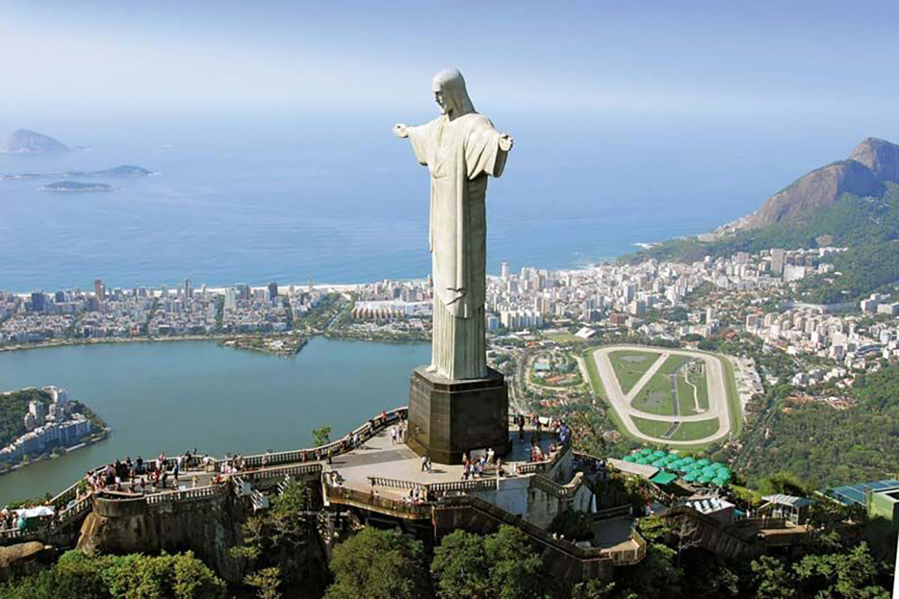

Statua Chrystusa Zbawiciela
Symbol Rio de Janeiro i jeden z najbardziej rozpoznawalnych pomników na świecie.

Historia i znaczenie
Chrystus Zbawiciel to pomnik Jezusa Chrystusa zaprojektowany przez brazylijskiego inżyniera Heitora da Silva Costy. Został wybudowany w 1931 roku na szczycie góry Corcovado w Rio de Janeiro.
Interesujące fakty:
- Postać Chrystusa ma 30 metrów wysokości
- Rozpiętość ramion wynosi 28 metrów
- Wykonany z betonu armowanego i kamienia
- UNESCO wpisało go na listę światowego dziedzictwa w 2012 roku
Informacje techniczne:
| Lokalizacja: | Rio de Janeiro, Brazylia |
| Wysokość pomnika: | 30 metrów |
| Wysokość całkowita: | 38 metrów (z cokołem) |
| Rok ukończenia: | 1931 n.e. |